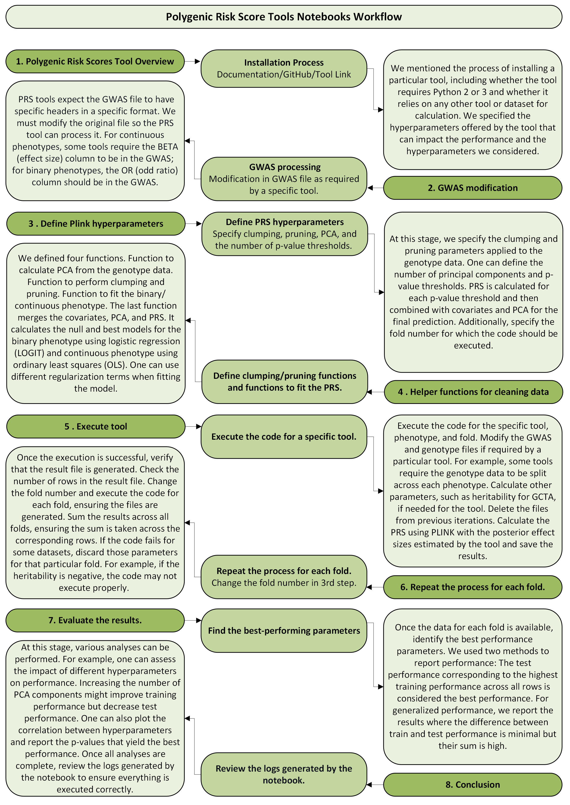

Polygenic Risk Score Tools Notebooks Workflow#
Notebooks for each tool are organized in the following format:
1. Polygenic Risk Scores Tool Overview#
Installation Process#
Documentation/GitHub/Tool Link
Discussed the process of installing the tool.
Whether the tool requires Python 2 or 3.
Checked if the tool relies on any other tools or datasets for calculation.
Specified the hyperparameters offered by the tool.
Highlighted the hyperparameters we considered.
2. GWAS Modification#
GWAS Processing#
Modified the GWAS file as required by the specific tool.
PRS tools expect the GWAS file to:
Be in a specific format.
Have specific headers.
GWAS should be in a specific format before it is passed to Notebook/Code.
Continuous phenotypes: Ensure the
BETA(effect size) column is in the GWAS.Binary phenotypes: Ensure the
OR(odd ratio) column is in the GWAS.
3. Define Plink Hyperparameters#
Define PRS Hyperparameters#
Specified clumping and pruning parameters for the genotype data.
Defined the number of principal components (PCA).
Defined the number of p-value thresholds (More p-values, better results. PRS is calculated for each p-value threshold. Combined PRS with covariates and PCA for the final prediction).
Specified the fold number for which the code should be executed.
4. Helper Functions for Cleaning Data#
Define Clumping/Pruning Functions and Functions to Fit the PRS#
Defined a function to calculate PCA from the genotype data.
Defined a function to perform clumping and pruning.
Defined a function to fit the binary phenotype using logistic regression (
LOGIT).Merges covariates, PCA, and PRS.
One can use different regularization terms when fitting the model.
One can use different evaluation metrics.
Defined a function to fit the continuous phenotype using ordinary least squares (
OLS).Merges covariates, PCA, and PRS.
One can use different regularization terms when fitting the model.
One can use different evaluation metrics.
5. Execute Tool#
Execute the Code for a Specific Tool#
Deleted files from previous iterations.
Executed the code for the specific tool, phenotype, and fold.
Modified the GWAS and genotype files if required by the tool.
For some tools, genotype data must be split across each phenotype.
Calculated additional parameters, such as heritability for
GCTA, if needed.Calculated the PRS using
PLINKwith posterior effect sizes estimated by the tool.Saved the results.
6. Repeat the Process for Each Fold#
Change the Fold Number in the 3rd Step#
Verified that the result file was generated.
Checked the number of rows in the result file.
Changed the fold number and executed the code for each fold.
Ensured that files were generated for each fold.
Summed the results across all folds, making sure the sum corresponds to the correct rows.
If the code failed for some datasets (e.g., negative heritability), discarded those rows for that fold.
7. Evaluate the Results#
Find the Best-Performing Parameters#
Identified the best performance parameters across all folds.
Used two methods to report performance:
The test performance corresponding to the highest training performance across all rows.
Generalized performance where the difference between train and test performance is minimal, but their sum is high.
8. Conclusion#
Review Logs Generated by the Notebook#
Performed various analyses, such as:
Assessing the impact of different hyperparameters on performance.
Plotting the correlation between hyperparameters and train and test performance.
Reporting the p-values that yield the best performance.
Reviewed the logs generated by the notebook to ensure proper execution.